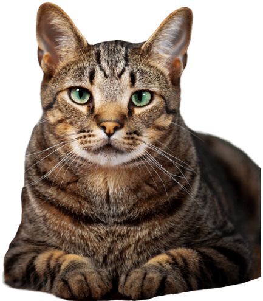

Veterinaria en Bogotá
Somos la mejor veterinaria del país, con los mejores especialistas y la última tecnología.

Sobre Nosotros
¿Quiénes Somos?
En Veterinaria Bigotes, nos apasiona cuidar y mejorar la vida de nuestros amigos felinos. Nuestra dedicación a la salud y el bienestar de los gatos nos impulsa a brindar servicios médicos excepcionales y un trato amoroso.
¿Por Qué Elegirnos?
Nuestro equipo de veterinarios y amantes de los gatos está comprometido con la atención integral de su mascota. Ya sea para una consulta de rutina o un tratamiento especializado, estamos aquí para garantizar que su gato reciba la mejor atención posible.
En Bigotes, entendemos que cada gato es único y merece un enfoque personalizado. Trabajamos en colaboración con usted para diseñar un plan de atención que se adapte a las necesidades individuales de su gato, brindando tranquilidad tanto a usted como a su peludo amigo.
¡El Impacto que Brindamos!
En cada consulta y tratamiento, nuestro objetivo es mejorar la calidad de vida de su gato. Desde exámenes de salud preventivos hasta intervenciones médicas avanzadas, nuestro compromiso es proporcionar cuidados excepcionales que hagan una diferencia real en la salud y la felicidad de su mascota.
En Bigotes, no solo tratamos enfermedades; también construimos relaciones duraderas. Valoramos la confianza que deposita en nosotros y nos esforzamos por retribuir esa confianza con un cuidado amoroso y comprensivo que su gato se merece.